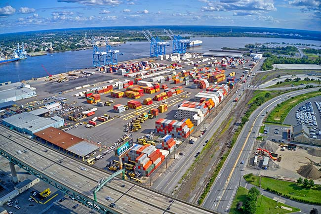

CPS began operation in 1984 in Woodstown NJ offering USDA inspection of meat from mainly South America.
The original owner John Ober passed away in 2021 and to-day CPS is managed by his niece Suzanne Schaefer. Suzanne has been part of CPS since 1990.
Today CPS is focusing on warehousing services, importing and exporting of regular dry goods of all kinds, refrigerated and non-refrigerated foods. short and long-time storage, cross-docking.
Taking advantage of a strategic location 11 miles from Salem and 29 miles to Baltimore.
Services offered:
20,000 SQFT DRY WAREHOUSING
15,000 SQFT FROZEN
5,000 SQFT CHILLED
3,000 SQFT Loading dock with 5 container doors.
Product inspection, labeling, repacking etc.
USDA meat inspection for export
USDA bonded storage – should be available early 2025 –
Container haulage to and from pier
Rail service with private rail track
Online access to your inventory via our 3PL WMS www.extensiv.com
CPS offer highly competitive rates and a small, dedicated staff with many years’ experiences.
CPS can offer any type of equipment to carry your cargo: 20/40/45/48/53, dry containers, reefers, flat racks, flat beds, break bulk and project cargo.
CPS can support your business whether you are shipping just one container or hundreds of containers.
Trust CPS to keep your cargo moving.
Bermuda International Shipping Ltd. (BISL) (bermudaislander.bm)
SMS Rail Lines - SMS Rail Service, Inc.
